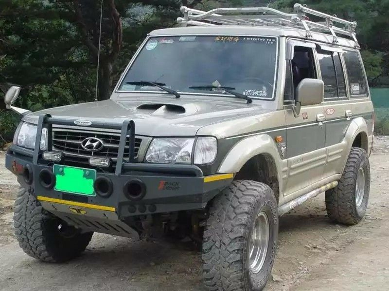
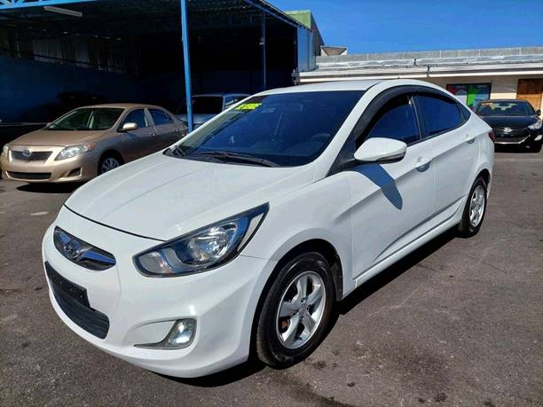
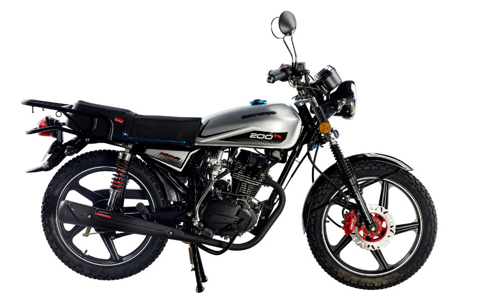

Hyundai Galloper 1999
La Hyundai Galloper es un SUV todoterreno producido
entre 1991 y 2003.
Con motorizaciones diesel y gasolina
tracción 4x4 y carrocería de cinco puertas, destacó
por su robustez y fiabilidad.

A continuación se presentan algunas especificaciones
técnicas del Hyundai Galloper del año 1999:
- Motor: 2.5 litros, 4 cilindros en línea, diesel
- Potencia: 100 hp a 4,200 rpm
- Torque: 23.5 kg-m a 2,000 rpm
- Transmisión: Manual de 5 velocidades
- Tracción: 4x4 con reductora
- Suspensión delantera: Independiente, doble brazo oscilante con barra estabilizadora
- Suspensión trasera: Eje rígido con resortes helicoidales y barra estabilizadora
- Frenos delanteros: Discos ventilados
- Frenos traseros: Tambores
- Neumáticos: 235/75 R15
- Dimensiones (largo x ancho x alto): 4,505 x 1,780 x 1,860 mm
- Distancia entre ejes: 2,700 mm
- Peso: 1,935 kg
- Capacidad de carga: 540 kg
Hyundai AccentBlue
El Hyundai Accent Blue 2015 es un automóvil compacto
y económico que ofrece un rendimiento de combustible
impresionante y una buena relación calidad-precio.
Puede venir con Transmisión manual o automatica
y cuenta con una gran
cantidad de características de
seguridad y tecnología.
El diseño exterior es elegante
y moderno, mientras que el interior es espacioso y
cómodo para los pasajeros.
En resumen, el Hyundai Accent Blue 2015 es un
automóvil asequible y confiable para aquellos que
buscan un vehículo económico y fácil de manejar.

- Motor: 1.6 litros, 4 cilindros en línea, DOHC
- Potencia: 120 hp a 6,300 rpm
- Torque: 113 lb-ft a 4,500 rpm
- Transmisión: Manual de 6 velocidades o Automática de 6 velocidades con cambio de marchas SHIFTRONIC®
- Tracción: Delantera
- Suspensión delantera: Tipo McPherson con barra estabilizadora
- Suspensión trasera: Barra de torsión con amortiguadores hidráulicos
- Frenos delanteros: Discos ventilados
- Frenos traseros: Tambores
- Neumáticos: 185/65 R15
- Dimensiones (largo x ancho x alto): 4,440 x 1,790 x 1,450 mm
- Distancia entre ejes: 2,580 mm
- Peso: 1,138 - 1,269 kg
- Capacidad del tanque de gasolina: 11.9 galones (45 litros)
Serpento 200 R
La moto Taypan 200 R Serpente es una marca costarricense de
motocicletas que cuenta con un motor de 4
tiempos y 200cc
de cilindraje. Tiene una potencia máxima de 11.3HP y alcanza
una velocidad máxima de 100 km/h.
Cuenta con arranque
eléctrico y de patada, transmisión de 5 velocidades, frenos de disco
delanteros y tambor trasero,
y suspensión delantera telescópica
hidráulica y trasera de doble resorte. Pesa 98 kg y tiene una
capacidad de carga máxima de 160 kg.

- Tipo: Mensajera
- Motor: 4 tiempos
- Enfiamiento: Por Aire
- Cilindraje: 200CC
- Cilindros: 1
- Distribución: Varilla
- Potencia Máxima: 11.3 HP A 7500 R.P.M(8.5KW)
- Máximo Torque: 9.5 NM
- Velocidad Máxima: 100 KM/HORA
- Arranque: Eléctrico y patada
- Transmisión: 5 Velocidades
- Clutch: Manual Multidisco Húmedo
- Suspensión delantera: Telescopica Hidraulica
- Suspensión trasera: Doble resorte
- Freno delantero: Disco
- Freno trasero: Tambor
- Llanta delantera: 2.50-18
- Llanta trasera: 2.75-18
- Combustible: Gasolina regular
- Dimensiones: 1910MM x 740MM x 1050MM
- Peso: 98Kg
- Carga Máxima(KG): 160Kg
- Capacidad Tanque(Litros): 8.6L
- Rendimiento(km/gal): 198